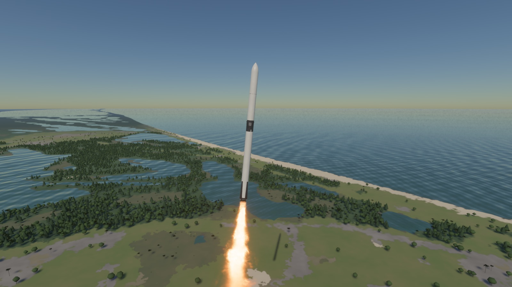
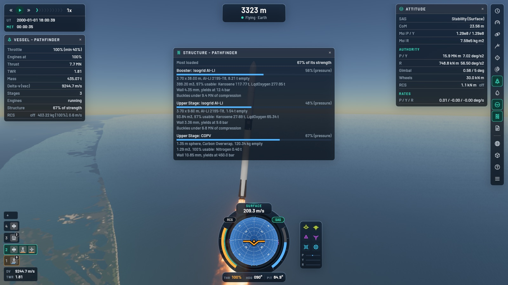
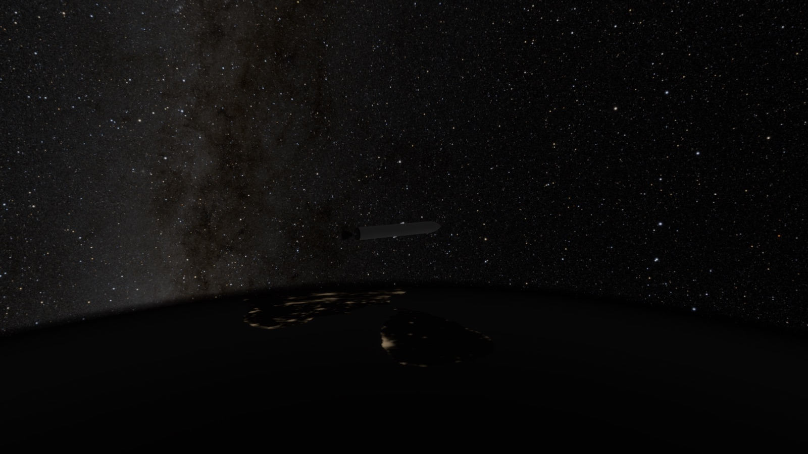

A realistic spaceflight game.
Open Space Program is built around real numbers: real-scale planets, real engine performance, and orbits that are solved exactly, so a trajectory comes out the same at any time warp. Launch from Cape Canaveral, reach orbit, rendezvous, and go on to the Moon.
It is early and unfinished. You can fly the scenarios today. The in-game build editor is the next big step.

What is in it
The physics is the part that is done properly, and what the rest is built on.
Simulation
- Orbits
- Exact patched conics, with sphere-of-influence changes, atmosphere entry and ground contact solved to the tick. The result is the same at any time warp.
- Time and space
- Integer time in microseconds since J2000, good for 292 000 years either way. Hierarchical frames and a floating origin at the vessel keep large distances precise.
- Worlds
- IAU rotation models for every body, real launch-site coordinates, and an Earth built from real elevation and land-cover data.
- Engines
- Pressure-dependent specific impulse, limited ignitions, ullage, throttle floors, spool-up and tail-off, and gimbal.
- Structure
- Procedural tanks with real wall thickness that burst and buckle. Fins can tear off.
- Aerodynamics
- Drag and lift from a voxel model of the whole vessel, so radial boosters, fairings and open interstages need no special cases.
- Attitude
- Exact torque-free rotation for any shape, the Dzhanibekov flip included, and SAS that holds exactly while time warps.
- Planning
- Maneuver nodes, a burn executor, targets and rendezvous, and a transfer planner with porkchop plots.
- Mods
- Planets, parts, craft, scenarios, windows and keybindings are all records that mods can add or patch. F5 reloads them live.


Roadmap
What is planned, roughly in this order. There are no dates. The editor comes before most of the spacecraft systems because they all build on the same part model. The full list, with what depends on what, is the .tasks folder in the repo.
Now: flying it is readable and looks right
In progress- Staging as ordered part actionsIn progress
- Part windows marked with the part's colourIn progress
- Highlight a stage's parts on the rocketPlanned
- Hot stagingPlanned
- Reorder stages by hand, and see where one landsPlanned
- Solid boosters that look and burn like solidsPlanned
- Plumes for every engineDone
- A staging window you can read, and a compact oneDone
- A smaller, quieter flight HUDDone
Build editor
PlannedCraft come from files today. Next you build them in the game. The test is a Saturn V built in the editor that flies Apollo 11. A smoke test already flies Apollo 11 with a ready-made Saturn V, and the editor has to match it.
- Place, remove, pattern and undo parts
- Physics on any part at any pose
- A part palette with thumbnails and tooltips
- The editor scene and its windows
- Launch from the editor, and from files
- Recipes, starting with the Saturn V's
Spacecraft systems
PlannedEverything a mission needs besides an engine and a tank.
- Electrical power and avionics
- Ground stations and communication links
- Docking ports, and joining two vessels
- The lander: Moon terrain, legs, a lunar module
- Thermal model, heat shield and capsule entry
- Parachutes and the sea
- Crew and life support
- Failures and reliability
- More missions: Falcon 9 and Dragon, the Space Shuttle, Soyuz
Flight planning and saves
Planned- A flight plan window
- A rendezvous panel and target autopilot modes
- More in the transfer planner
- Navball frames, a roll target and autopilot profiles
- Warp to any point on the orbit, up to 100 years per second
- Saving and loading a game
- A start menu: system, vehicle and location
Worlds
Planned- The full Solar System: the moons of Mars, Jupiter and Saturn, Saturn's rings, Uranus, Neptune, Pluto
- Four more launch pads: Vandenberg, Starbase, Kourou and Mahia
- Biomes and ground clutter
- Craters on airless bodies, and real Mars elevation
- Space weather: radiation, aurora, magnetospheres
- Other stars, and flying between them
Look and sound
Planned- Volumetric clouds, with shadows and god rays
- Ocean waves, foam and an underwater view
- GPU particles and engine heat glow
- Reflections, point-light shadows and ambient occlusion
- A docking camera and picture in picture
- Ray-traced cockpit views
- Engine sounds, wind and music
Interface and modding
Planned- A HUD editor, saved layouts and detachable windows
- Gamepad and mouse-button bindings
- Localisation
- A console with commands
- Ground track and target tracking windows
- Code mods, through a scripting layer
- Shader overrides and part creation tools from mods
Maybe later
Not plannedIdeas that nobody has planned yet.
- Science and a career
- Multiplayer
- Colonies
- Terramechanics for wheels and feet
- Anchoring vessels to the ground
- Working cockpit instruments
- Recolouring parts
- Trajectories drawn in any reference frame
Run it
Windows, Linux and macOS.
Getting started
- Download
- Builds are published on the releases page.
- From source
- Install Rust (the repo pins the version), bake Earth's terrain once, then run the game.
cargo run -p osp_bake --releasecargo run - First flight
- Press Esc for the scenario menu and pick the Cape. Space fires the next stage, Shift and Ctrl change the throttle, M opens the map and F1 shows help.